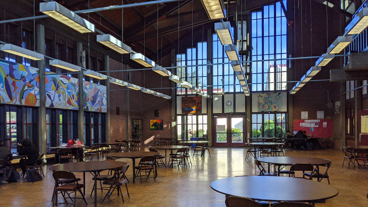

Explore Cantor College: World-Class Facilities for Your Success
At Cantor College, we are committed to providing our students with the best possible environment to learn, create, and innovate. Our state-of-the-art facilities are designed to support your academic journey and help you thrive in your chosen field. Whether you’re studying computing, design, or technology, our campus offers everything you need to excel.

Our Facilities
1. Advanced Computing Labs Our computing labs are equipped with the latest hardware and software, providing you with the tools you need to develop your skills in programming, cybersecurity, data science, and more. The labs are accessible 24/7, ensuring you can work on your projects at any time that suits you
2. Design Studios Our design studios offer a creative space for students in graphic design, digital media, and product design. Each studio is equipped with high-end graphic tablets, professional-grade software, and large-format printers, allowing you to bring your ideas to life. The studios also feature collaborative spaces where you can work with peers and faculty on group projects.
3. Innovation and Makerspace Cantor College’s Innovation and Makerspace is a hub for creativity and invention. This facility is equipped with 3D printers, laser cutters, CNC machines, and other advanced prototyping tools. Whether you're working on a design project or developing a new tech product, this space provides the resources to turn your concepts into reality.
4.Technology Sandbox The Technology Sandbox is an experimental space where students can explore the latest in VR, AR, and AI technologies. With access to cutting-edge devices and software, you’ll be able to experiment with emerging technologies and push the boundaries of what’s possible in your field.
5. Collaborative Learning Spaces Our campus features numerous collaborative learning spaces designed to foster teamwork and creative problem-solving. These spaces are equipped with smartboards, video conferencing tools, and flexible seating arrangements, making them ideal for group work, study sessions, or brainstorming meetings.
6. Library and Resource Centre The Cantor College Library is a comprehensive resource Centre offering an extensive collection of books, journals, and digital resources related to computing, design, and technology. The library also provides quiet study areas, computer stations, and access to online databases, ensuring you have the information you need at your fingertips.
7. Student Hub The Student Hub is the social heart of our campus, providing a place for relaxation and connection. Here, you’ll find a café, lounge areas, and recreational facilities, making it the perfect spot to unwind between classes, meet with friends, or join student-led activities and clubs.
8. Career and Development Centre Our Career and Development Centre is dedicated to helping you plan your future. Offering career counseling, resume workshops, and job placement services, this Centre provides the support you need to transition from student to professional. The Centre also hosts regular employer networking events and industry talks to help you build connections in your field.
9. Fitness and Wellness Centre We believe in nurturing both the mind and body. Our Fitness and Wellness Centre offers a fully equipped gym, exercise studios, and a range of fitness classes to help you stay healthy and active. The Centre also includes wellness services such as yoga, meditation, and counseling to support your overall well-being.
9. Fitness and Wellness Centre We believe in nurturing both the mind and body. Our Fitness and Wellness Centre offers a fully equipped gym, exercise studios, and a range of fitness classes to help you stay healthy and active. The Centre also includes wellness services such as yoga, meditation, and counseling to support your overall well-being.
Experience Cantor College
Cantor College’s facilities are designed to enhance your learning experience and support your academic and personal growth. We invite you to explore our campus, discover our resources, and make the most of everything we have to offer.